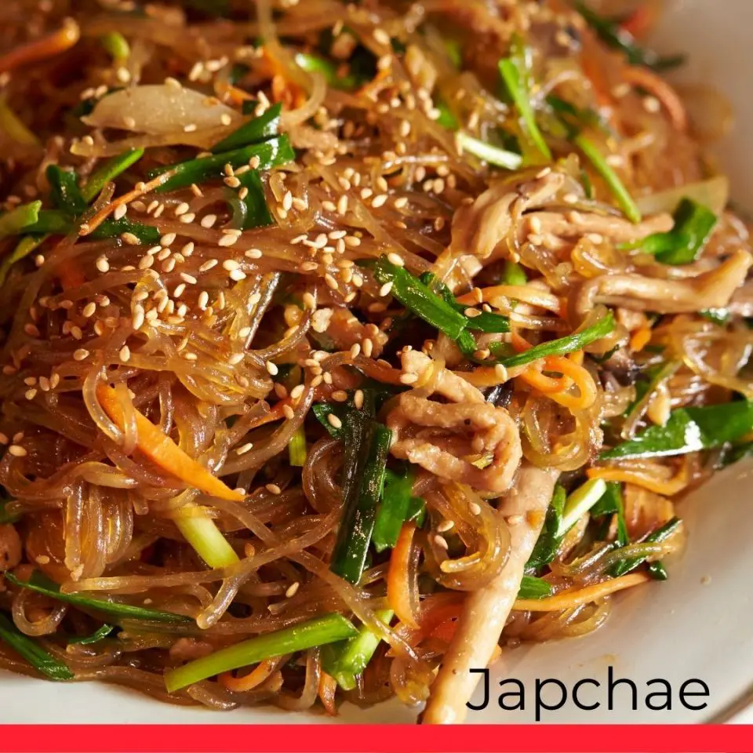

Japchae

Directions
Step 1
Whisk soy sauce, sugar, sesame oil, and garlic in a bowl until sugar is dissolved into sauce.
Step 2
Bring a large pot of lightly salted water to a boil. Cook sweet potato noodles in the boiling water, stirring
occasionally until cooked through but firm to the bite, 6 to 7 minutes. Rinse noodles under cold water and drain.
Transfer noodles to a bowl, add 2 tablespoons sauce, and toss to coat.
Step 3
Squeeze beef under running water until juices run clear. Mix beef and 1 tablespoon sauce together in a bowl.
Step 4
Bring a pot of water to a boil. Cook spinach in the boiling water until just wilted, about 1 minute. Drain quickly and
transfer spinach to a bowl of cold water to stop the cooking process. Squeeze excess water from spinach, place spinach
in a large bowl, and season with salt and pepper.
Step 5
Heat 1 teaspoon oil in a large skillet over medium-high heat; cook onion until fragrant but crisp, 1 to 2 minutes.
Transfer onion to the bowl with spinach. Heat another 1 teaspoon oil in the same skillet. Cook mushrooms in the hot oil
until lightly browned but still firm, 1 to 2 minutes; add to onion mixture. Heat remaining 1 teaspoon oil in the same
skillet. Cook carrot in the hot oil until lightly browned but still crisp, 1 to 2 minutes; add to onion mixture.
Step 6
Cook and stir beef in the same skillet until browned, 1 to 2 minutes; add to onion mixture. Cook and stir noodles in the
same skillet until heated through, 1 to 2 minutes; add to beef-onion mixture. Add remaining sauce to beef-noodles
mixture and toss to coat using your hands.